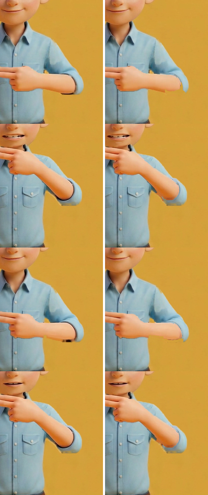
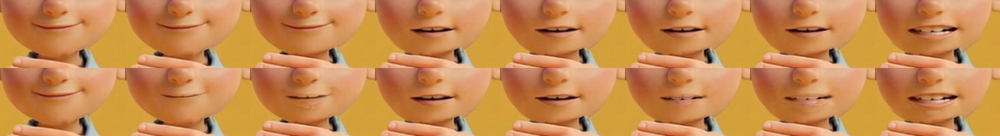

1 · 動画
音を出して、見てください。
名前 → /n/ ×3（10.00秒）確認待ち · 10.0秒・1920×1080・24.0fps・音声あり
作成：フォニ丸pi
PROS PHONICS / 成果物 · N・v17
蜂谷さんのご依頼（11/7 16:04）の版です。v16A2 は腕を毎コマ回したため不自然でちらついたので、やり直しました。v17 は v13 の mp4 をそのまま土台にし、腕の動き・位置・手の高さ・速さは v13 から一切変えていません。直したのは ①口の中間 ②肩・肘の跡 ③手があごに重なる所のあご、の3か所だけです。
| 文字 | 判定 | 中身 |
|---|---|---|
| N | ○ | 腕の動き・位置・高さ・速さ: v13 のまま（腕は回したり動かしたりしていません）。 |
| N | ○ | 3か所の外: mp4 にする前の絵で、全233コマ（234〜240 の白いフェードは v13 に同じ直しを薄めて重ねただけ）で v13 と同じ画素です（腕まわりの外の差 0画素）。 |
| N | ○ | ちらつき（止まりの間）: 腕のまわりがコマ間で変わる量は、止まりの173コマで v13 451画素、v17 451画素で同じです。v13 より大きく動くコマは 0 コマでした。 |
| N | ○ | 跡の直しは、止まりの間は前のコマと同じ直しをそのまま使うので、コマごとに消え方が変わりません。直しが変わるのは腕が動くコマだけです。 |
| N | ○ | 肘のまわりの黒い跡: 1コマ平均 777 → 145 画素（最大 1023 → 310）。 |
| N | ○ | 口: 閉じ→半開き の間に2枚（70・71コマ）、半開き→n_2 の間に2枚（75・76コマ）、戻りも同じ（92・93・96・97、+60・+120 も同じ）。唇の線を少しずつ動かした絵で、1コマ1枚だけ使い、重ねて薄めていません。 |
| N | ○ | あご: 手があごに重なる45コマだけ、はじめの絵のあごを手の上に戻しました。 |
| N | △ | v16A2 がだめだった理由（記録）: v13 の腕の絵を肩を軸に毎コマ回して位置を変えたため、肘の曲がり方・肩のつき方が不自然になり、止まっている間も腕が少しずつ変わってちらつきました。数値の検査は通っても、動かして見た自然さは数値では分かりません。これからは v13 の腕の動き・位置・高さは動かしません。 |
| N | △ | 画像AI・動画AIは使っていません（費用 0ドル）。 |


ご意見は phonics-seisaku チャンネルで @phonimaru-pi を付けて書いてください（例: @phonimaru-pi B の手をもう少しゆっくり）。
N_nancy_noodle_v17.mp4 sha256 78f03b7b8a6f